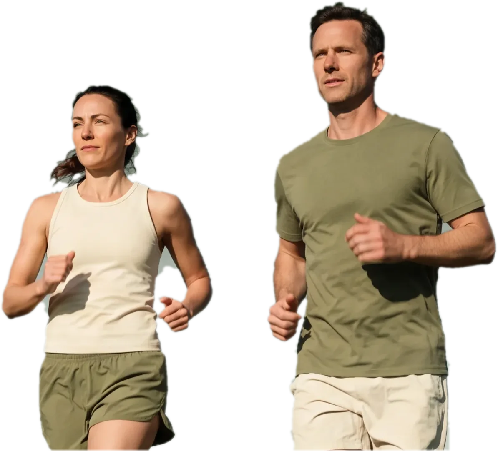

Quad 4 is designed as a sublingual formulation, administered under the tongue for a convenient, discreet treatment experience.
Simple sublingual administration.
No traditional pill to swallow.
Discreet and convenient to use.
More Freedom. Less Planning.
Make Room for the Moments That Matter.
Your intimate life shouldn't revolve around complicated routines. Explore a treatment approach designed with convenience and personal preferences in mind.
A convenient administration method.
Care that considers your lifestyle.
More confidence in your treatment choices.

Confidence on Your Terms.
Because Every Moment Matters.
With ingredients that have established roles in erectile dysfunction treatment, Quad 4 brings together different pharmacological properties in one proposed formulation.